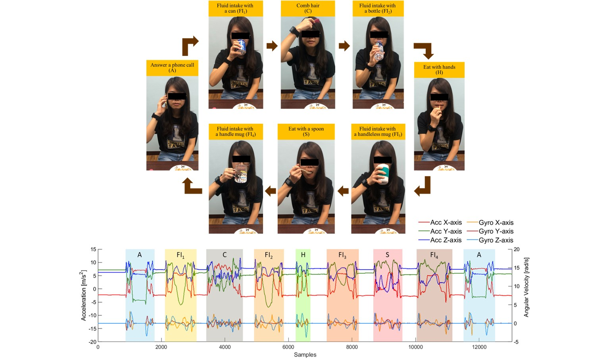
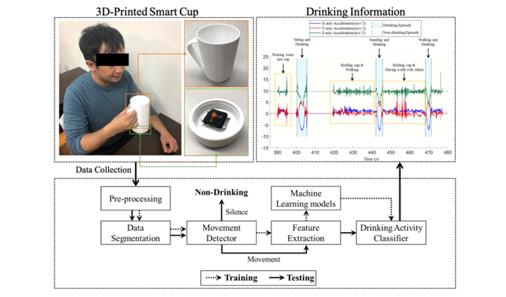

I received my Ph.D. and M.S. degree in the Department of Biomedical Engineering from National Yang Ming Chiao Tung University in 2015 and 2021. My research aims to develop healthcare and computer-assisted systems for monitoring, diagnosis and assessment in clinical and home-based environments by sensors and machine learning. The main topics include activity recognition, wearable computing, machine learning, and bio-signal processing. In my graduation project, I utilized a wearable sensor and machine learning algorithms to recognize drinking activities and estimate the intake volume. This is the first study to evaluate the intake amount by machine learning models.
More About Me
Projects
-Fluid Intake Monitoring-

MDPI Sensors 2020, 20(22), 6682
Hsiang-Yun Huang
, Chia-Yeh Hsieh, Kai-Chun Liu, Steen Jun-Ping Hsu and Chia-Tai Chan*
This work aims to propose a fluid intake monitoring system with a wearable inertial sensor using a hierarchical approach to detect drinking activities, recognize sip gestures and estimate fluid intake amount. Additionally, container-dependent amount estimation models are developed due to the influence of containers on fluid intake amount.

IEEE Sensors Journal 20 (22), 13743-13751
Kai-Chun Liu, Chia-Yeh Hsieh,
Hsiang-Yun Huang
, Li-Tzu Chiu, Steen Jun-Ping Hsu and Chia-Tai Chan*
The aim of this work is to design a 3D-printed smart cup attached with a single accelerometer and drinking event detection algorithm that is feasible to spot fluid intake gestures, especially for detecting drinking events and recognizing complete periods of drinking.
-Fall Detection and Monitoring-

IEEE Transactions on Cognitive and Developmental Systems PP(99):1-1
Kai-Chun Liu, Kuo-Hsuan Hung, Chia-Yeh Hsieh,
Hsiang-Yun Huang
, Chia-Tai Chan, and Yu Tsao*
To improve the detection accuracy with low-resolution accelerometer signals, this work proposed accelerometer signal enhancement model based on a deep denoising convolutional autoencoder architecture reconstructs high-resolution signals from the low-resoution signals.
IEEE Transactions on Neural Systems and Rehabilitation Engineering (IEEE TNSRE), vol. 29, pp. 1243-1251, 2021
Kai-Chun Liu, Michael Chan, Heng-Cheng Kuo, Chia-Yeh Hsieh,
Hsiang-Yun Huang
, Chia-Tai Chan, and Yu Tsao*
Domain-adaptive fall detection (DAFD) using deep adversarial training is proposed to tackle cross-domain problems, such as cross-position and cross-configuration. The proposed DAFD can transfer knowledge from the source domain to the target domain by minimizing the domain discrepancy to avoid mismatch problems.
MDPI Sensors 2021, 21(9), 3302
Chia-Yeh Hsieh,
Hsiang-Yun Huang
, Kai-Chun Liu, Chien-Pin Liu, Chia-Tai Chan, and Steen J. Hsu*
This pilot study proposes an automatic multiphase identification algorithm for phase-aware fall recording systems to provide the information of different phases, including pre-fall, free-fall, impact, resting and recovery phases in a fall process.
IEEE Sensors Journal 2019, 20(6), 3303-3313
Kai-Chun Liu, Chia-Yeh Hsieh,
Hsiang-Yun Huang
, Steen J. Hsu, and Chia-Tai Chan*
This paper investigates the impact of segmentation approaches and window sizes in wearable-based critical fall detection systems with machine learning models.
-Frozen Shoulder Assessment-
MDPI Sensors 2021, 21(1), 106
Chih-Ya Chang, Chia-Yeh Hsieh,
Hsiang-Yun Huang
, Yung-Tsan Wu, Liang-Cheng Chen, Chia-Tai Chan, and Kai-Chun Liu*
This pilot study aims to propose an automatic functional shoulder task identification and sub-task segmentation system using inertial measurement units to provide reliable shoulder task labeling and sub-task information for clinical professionals. T
-Indoor Localization-
MDPI Sensors 2019, 19(17), 3786
Hsiang-Yun Huang
, Chia-Yeh Hsieh, Kai-Chun Liu, Hui-Chun Cheng, Steen J. Hsu and Chia-Tai Chan*
This study proposes a multi-sensor fusion approach to improve the accuracy of the pedestrian dead reckoning system by utilizing a light sensor, Bluetooth and map information.
Contact Me
Hsiang-Yun Huang (Amy Huang)
-
Email
huangshoy@gmail.com
amy16151@hotmail.com

{kind=link}
{kind=link}

{kind=link}
{kind=link}
{kind=link}
{kind=link}
{kind=link}